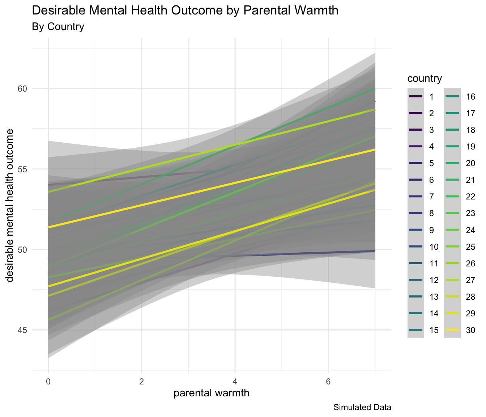

3 Simulated Multi-Country (Multilevel) Data
I use simulated data in this example. Data come from 30 hypothetical countries. Data contain measures of a few key aspects of parenting that have proven salient in the empirical literature on parenting to date: parental warmth, and physical punishment. Both parenting measures are normally distributed variables. Our outcome is conceptualized as a positive mental health outcome or behavioral outcome, and higher levels of outcome are considered to be better. Statistically, the data are clustered within countries.
In this simulation, I construct the data so that warmth is positively related to the outcome, while physical punishment is negatively related to the outcome.
| Sample of Simulated Data | |||||
| With Descriptive Statistics For Entire Sample | |||||
| id | country | warmth | physical_punishment | outcome | |
|---|---|---|---|---|---|
| 1 | 15 | 129.65 | 84.86 | 685.30 | |
| 2 | 24 | 106.24 | 90.91 | 330.52 | |
| 3 | 11 | 83.41 | 95.94 | −130.77 | |
| 4 | 8 | 90.59 | 96.00 | 100.51 | |
| 5 | 21 | 95.06 | 85.30 | 149.10 | |
| 6 | 20 | 66.60 | 102.34 | 238.07 | |
| 7 | 6 | 135.68 | 98.84 | 301.34 | |
| 8 | 15 | 118.20 | 90.05 | 658.42 | |
| 9 | 9 | 68.89 | 98.36 | −33.05 | |
| 10 | 20 | 120.38 | 100.48 | 558.50 | |
| average | 5.50 | 14.90 | 101.47 | 94.31 | 285.80 |
| SD | 3.03 | 6.23 | 24.47 | 6.19 | 279.99 |
